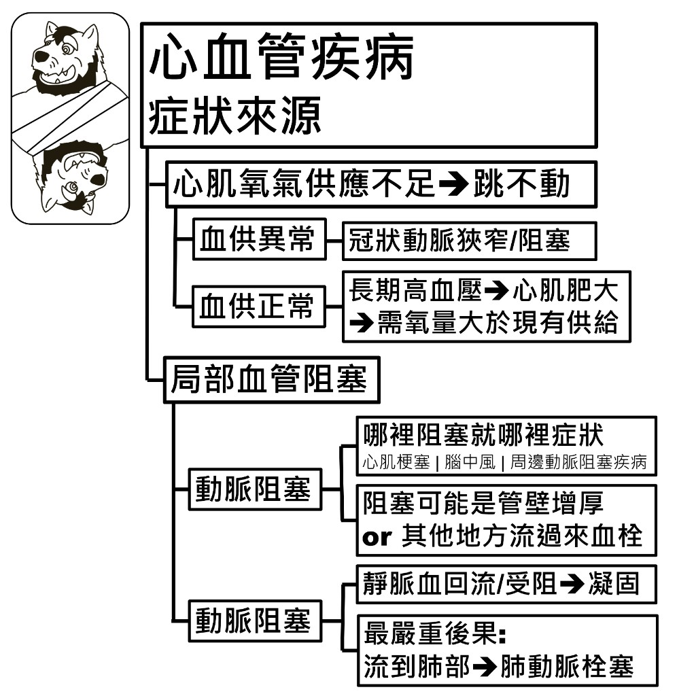
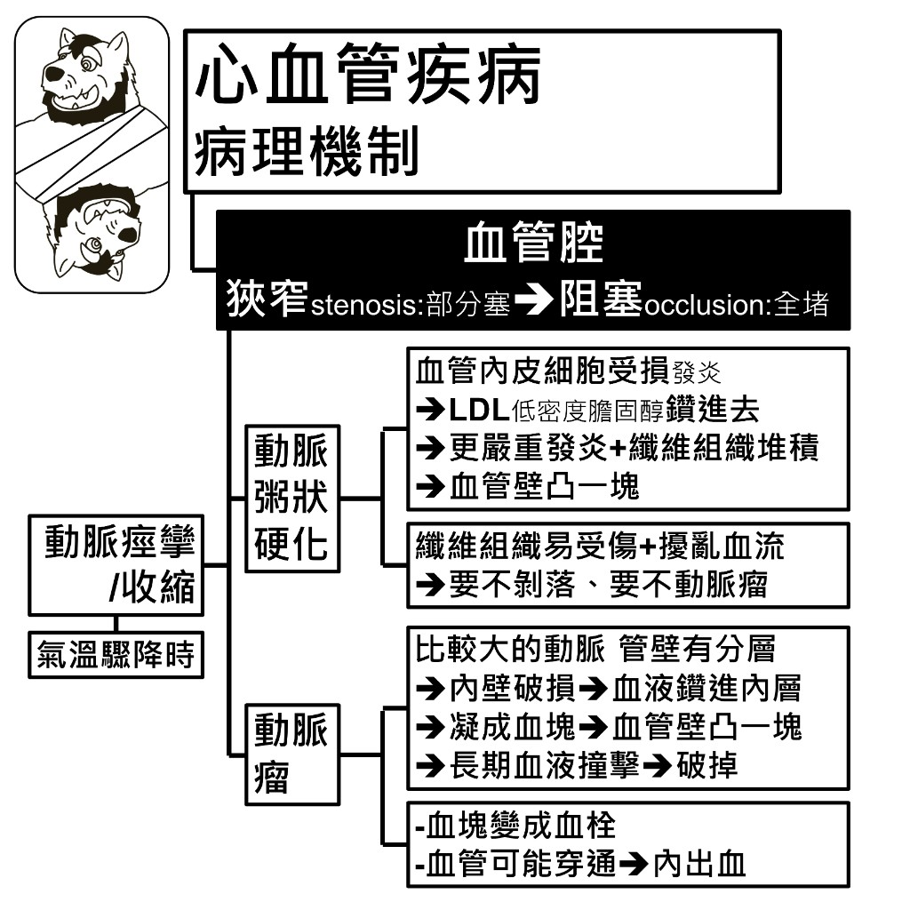
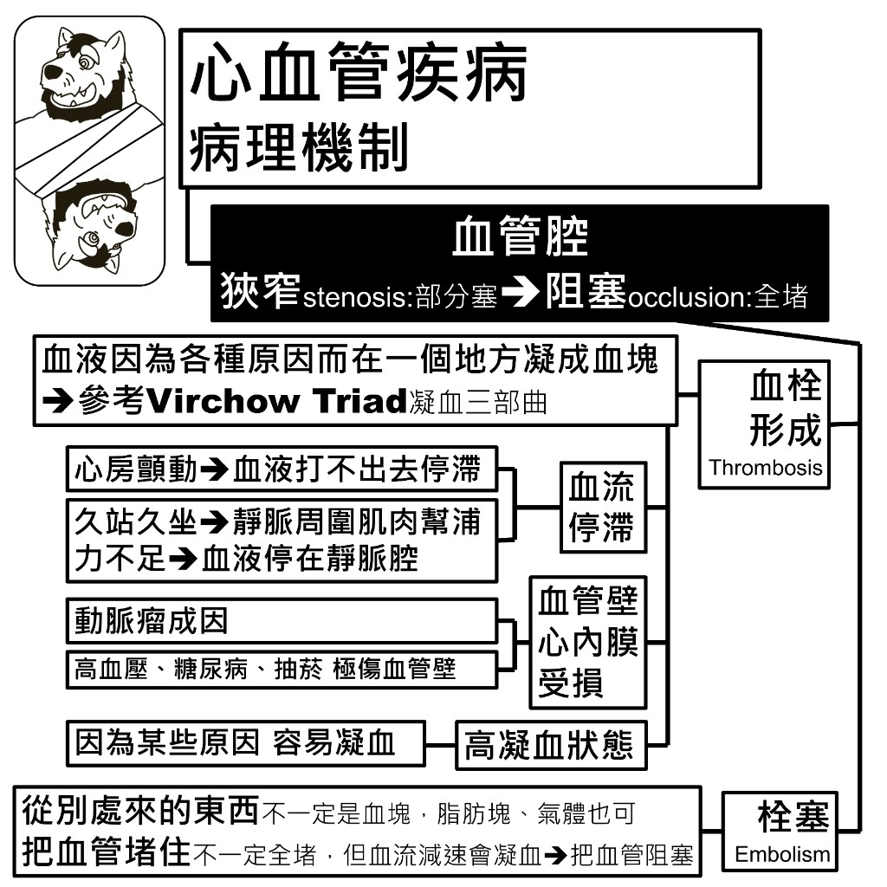
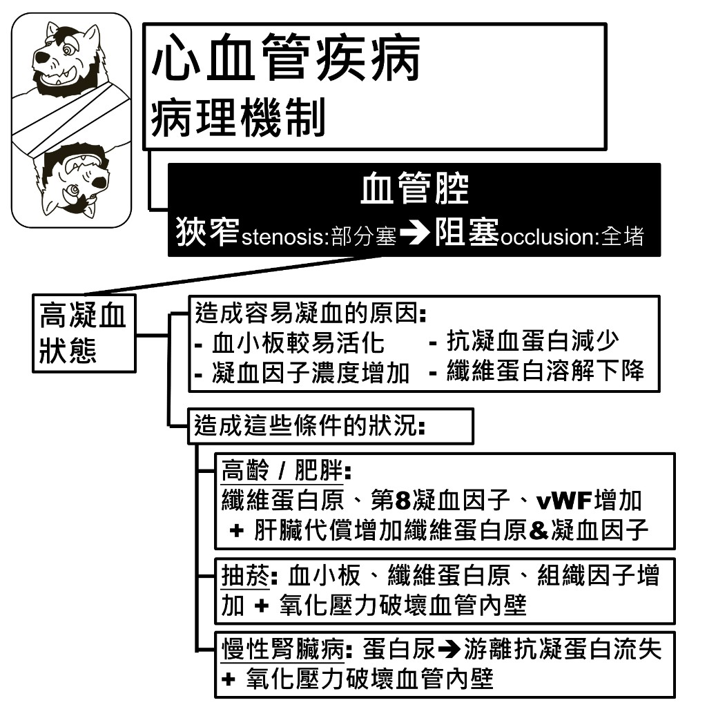
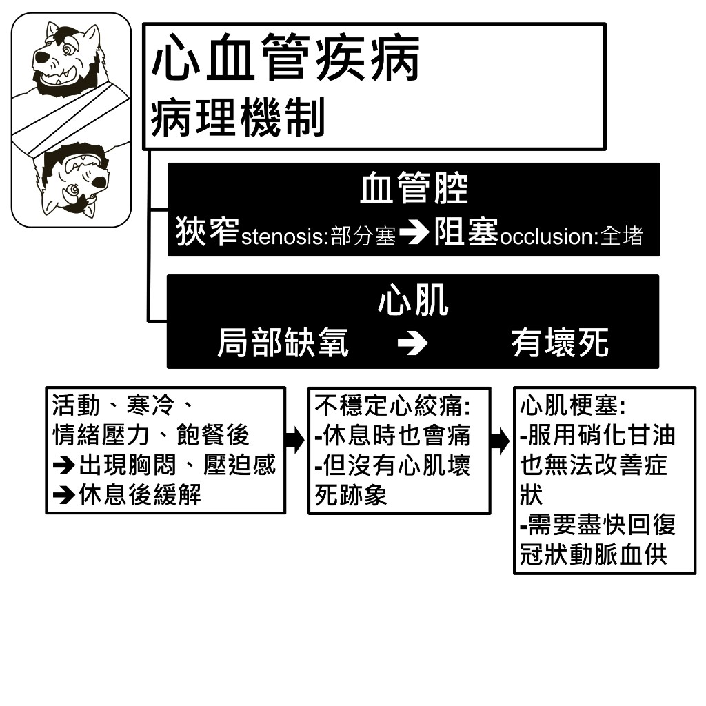
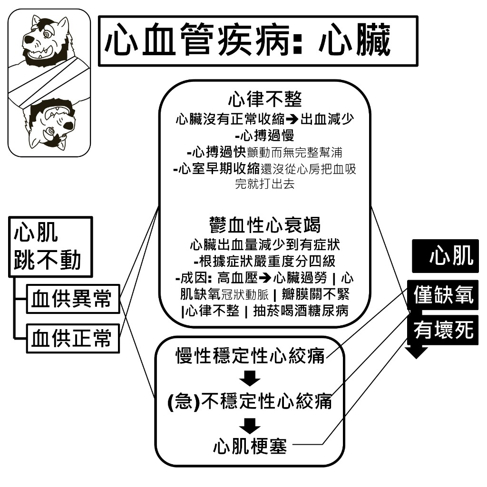
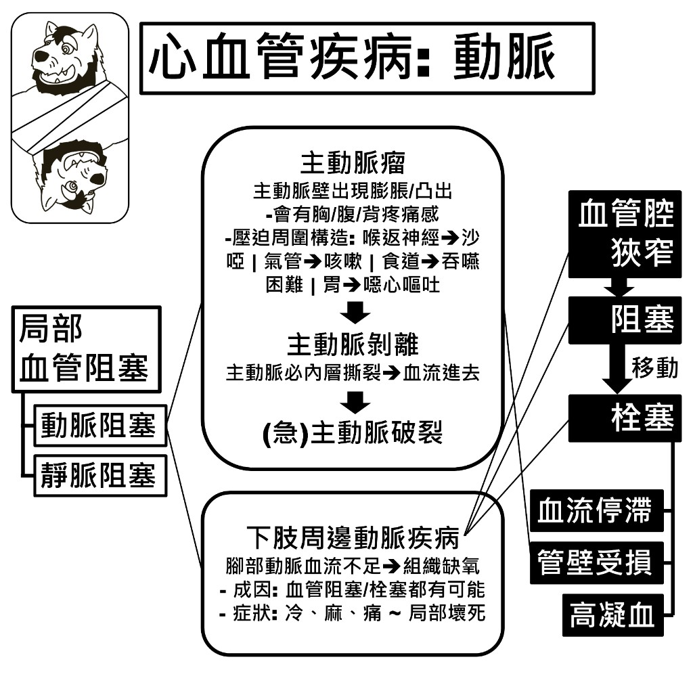
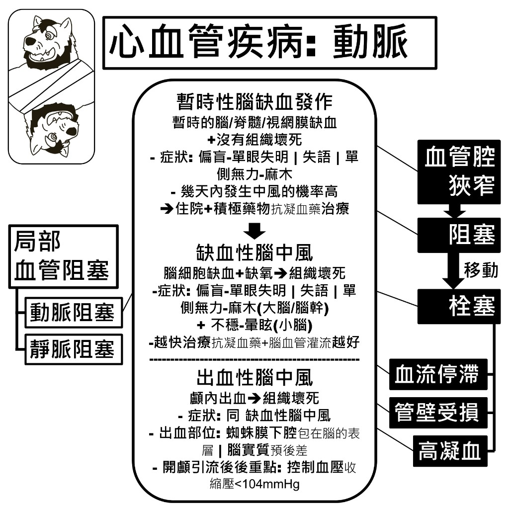
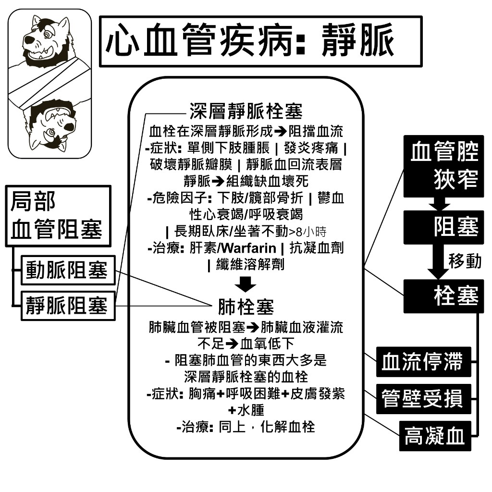

症狀來源
心血管疾病看起來種類很多，但症狀的源頭只有兩類：心肌氧氣供應不足，以及局部血管阻塞。

心肌氧氣供應不足 → 跳不動
| 情況 | 原因 |
|---|---|
| 血供異常 | 冠狀動脈狹窄／阻塞 |
| 血供正常 | 長期高血壓 → 心肌肥大 → 需氧量大於現有供給 |
局部血管阻塞
| 類型 | 重點 |
|---|---|
| 動脈阻塞 | 哪裡阻塞就哪裡症狀：心肌梗塞｜腦中風｜周邊動脈阻塞疾病 |
| 阻塞可能是管壁增厚，或是其他地方流過來的血栓 | |
| 靜脈阻塞 | 靜脈血回流受阻 → 凝固 |
| 最嚴重後果：流到肺部 → 肺動脈栓塞 |
病理機制：血管腔狹窄與阻塞
血管腔的問題分兩個程度：狹窄（stenosis，部分塞）→ 阻塞（occlusion，全堵）。造成狹窄的主要有三條路徑。

動脈粥狀硬化
- 血管內皮細胞受損（發炎）→ LDL 低密度膽固醇鑽進去 → 更嚴重發炎＋纖維組織堆積 → 血管壁凸一塊
- 纖維組織易受傷＋擾亂血流 → 要不剝落、要不形成動脈瘤
動脈瘤
- 比較大的動脈管壁有分層：內壁破損 → 血液鑽進內層 → 凝成血塊 → 血管壁凸一塊 → 長期血液撞擊 → 破掉
- 血塊會變成血栓
- 血管可能穿通 → 內出血
動脈痙攣／收縮
- 氣溫驟降時
病理機制：血栓形成與栓塞
兩個名詞常被混用，但來源不同：血栓是在原地凝出來的，栓塞是從別的地方漂過來的。

血栓形成（Thrombosis）
血液因為各種原因而在一個地方凝成血塊，可參考 Virchow Triad（凝血三部曲）的三個條件：
| 條件 | 常見狀況 |
|---|---|
| 血流停滯 | 心房顫動 → 血液打不出去而停滯 |
| 久站久坐 → 靜脈周圍肌肉幫浦力不足 → 血液停在靜脈腔 | |
| 血管壁／心內膜受損 | 動脈瘤成因 |
| 高血壓、糖尿病、抽菸，極傷血管壁 | |
| 高凝血狀態 | 因為某些原因容易凝血（詳見下一節） |
栓塞（Embolism）
- 從別處來的東西：不一定是血塊，脂肪塊、氣體也可以
- 把血管堵住：不一定全堵，但血流減速會凝血 → 把血管阻塞
病理機制：高凝血狀態

造成容易凝血的原因
- 血小板較易活化
- 凝血因子濃度增加
- 抗凝血蛋白減少
- 纖維蛋白溶解下降
造成這些條件的狀況
| 狀況 | 機轉 |
|---|---|
| 高齡／肥胖 | 纖維蛋白原、第 8 凝血因子、vWF 增加＋肝臟代償增加纖維蛋白原與凝血因子 |
| 抽菸 | 血小板、纖維蛋白原、組織因子增加＋氧化壓力破壞血管內壁 |
| 慢性腎臟病 | 蛋白尿 → 游離抗凝蛋白流失＋氧化壓力破壞血管內壁 |
💡 慢性腎臟病的蛋白尿與相關指標，可以參考慢性腎臟病那一頁。
病理機制：從心肌缺氧到心肌梗塞
血管腔狹窄 → 阻塞，對應到心肌就是局部缺氧 → 有壞死。臨床上會看到三個遞進的階段。

| 階段 | 表現 |
|---|---|
| 穩定性心絞痛 | 活動、寒冷、情緒壓力、飽餐後 → 出現胸悶、壓迫感 → 休息後緩解 |
| 不穩定心絞痛 | 休息時也會痛，但沒有心肌壞死跡象 |
| 心肌梗塞 | 服用硝化甘油也無法改善症狀；需要盡快回復冠狀動脈血供 |
心臟
心肌跳不動（不論血供異常或血供正常）會表現成三類問題。

心律不整
心臟沒有正常收縮 → 打出去的血量減少。
- 心搏過慢
- 心搏過快：顫動而無完整幫浦
- 心室早期收縮：還沒從心房把血吸完就打出去
鬱血性心衰竭
心臟打出的血量減少到出現症狀，根據症狀嚴重度分四級。
成因：
- 高血壓 → 心臟過勞
- 心肌缺氧（冠狀動脈）
- 瓣膜關不緊
- 心律不整
- 抽菸、喝酒、糖尿病
心絞痛到心肌梗塞
慢性穩定性心絞痛 → （急）不穩定性心絞痛 → 心肌梗塞。前兩者心肌僅缺氧，到心肌梗塞則有壞死。
動脈：主動脈與下肢

主動脈瘤
主動脈壁出現膨脹／凸出。
- 會有胸／腹／背疼痛感
- 壓迫周圍構造：喉返神經 → 沙啞｜氣管 → 咳嗽｜食道 → 吞嚥困難｜胃 → 噁心嘔吐
主動脈剝離
主動脈壁內層撕裂 → 血流進去。再惡化即為（急）主動脈破裂。
下肢周邊動脈疾病
腳部動脈血流不足 → 組織缺氧。
- 成因：血管阻塞／栓塞都有可能
- 症狀：冷、麻、痛，嚴重至局部壞死
動脈：腦中風

暫時性腦缺血發作
暫時的腦／脊髓／視網膜缺血，沒有組織壞死。
- 症狀：偏盲－單眼失明｜失語｜單側無力－麻木
- 幾天內發生中風的機率高 → 住院＋積極藥物（抗凝血藥）治療
缺血性腦中風
腦細胞缺血＋缺氧 → 組織壞死。
- 症狀：偏盲－單眼失明｜失語｜單側無力－麻木（大腦／腦幹）＋不穩－暈眩（小腦）
- 越快治療越好：抗凝血藥＋腦血管灌流
出血性腦中風
顱內出血 → 組織壞死，症狀同缺血性腦中風。
- 出血部位：蜘蛛膜下腔（包在腦的表層）｜腦實質（預後差）
- 開顱引流後重點：控制血壓（收縮壓 < 104 mmHg）
靜脈：深層靜脈栓塞與肺栓塞

深層靜脈栓塞
血栓在深層靜脈形成 → 阻擋血流。
- 症狀：單側下肢腫脹｜發炎疼痛｜破壞靜脈瓣膜｜靜脈血回流表層靜脈 → 組織缺血壞死
- 危險因子：下肢／髖部骨折｜鬱血性心衰竭或呼吸衰竭｜長期臥床或坐著不動 > 8 小時
- 治療：肝素／Warfarin｜抗凝血劑｜纖維溶解劑
肺栓塞
肺臟血管被阻塞 → 肺臟血液灌流不足 → 血氧低下。
- 阻塞肺血管的東西大多是深層靜脈栓塞的血栓
- 症狀：胸痛＋呼吸困難＋皮膚發紫＋水腫
- 治療：同深層靜脈栓塞，並化解血栓